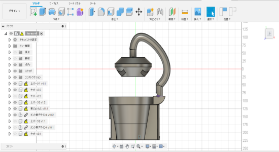
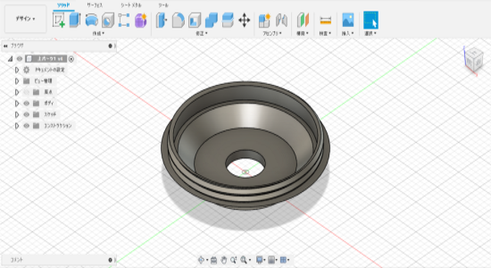
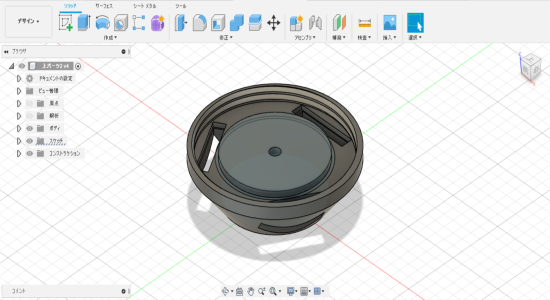
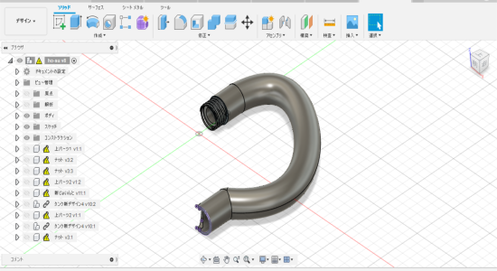
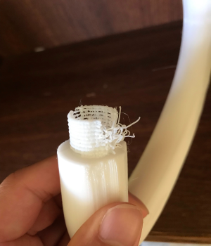
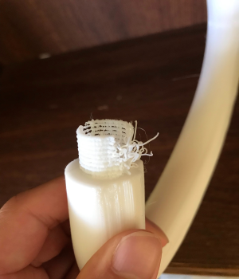

前回発表したのがあまりにもごつかったので改良しました。イメージはランプです。全体のイメージがこんな感じです。
指揮の2枚の社員が上下で合体し、ランプの部分になります。
 これらを繋ぐパイプは曲線にすることで前回のようなゴツさを取り除きました。
しかし、実際に印刷してみるとプリンターとの接地面が少なすぎるので底面があまりうまくは印刷できなかった。それに加えねじ部分の厚みがなかったので失敗してしまった。
 

全体的なフォルムはいいとして、まずは機能するものから作る。それからデザインを意識していく方針となった。